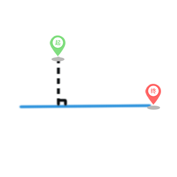

ASP.NET及bootstrap
整体框架用ASP.NET，页面布局用bootstrap，部署在腾讯云服务器IIS7
天地图 Javascript API
大部分地图功能都用此接口，如调用底图，缩放，自定义控件等
MySQL Database
部署在阿里云服务器，含bicycledb和user两个数据库，包括point（节点）、polyline（弧段）、address（地名）、record（路线记录）、userinfo（用户信息）、word（留言板）这6个表。
Floyd
最初使用，随着路网扩大，速度慢的问题暴露出来。
Dijkstra
速度快，满足实时查询路径的要求
起始节点规划
|  | ||
|
节点规划到垂足 |
节点规划到节点（加弧段） |
节点规划到节点（不加弧段） |